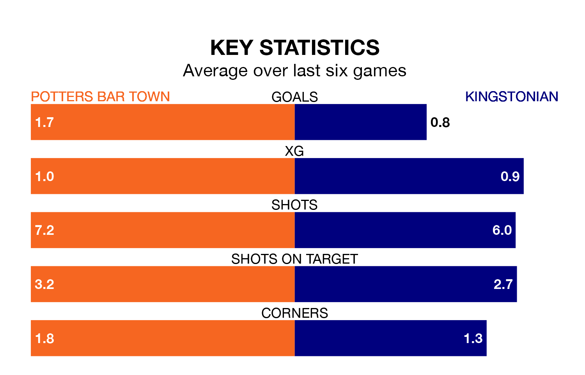

Kingstonian come to the Pakex Stadium to play Potters Bar Town on Saturday in terrible form, having collected just two points from their last six games.
The visitors have drawn two and lost four of their last six fixtures, while Potters Bar have three wins and three draws.
Kingstonian are bottom of the table after 33 games, of which they have won four and drawn six, earning 18 points.
Potters Bar are nine places ahead of the away side in 13th, with 12 wins and nine draws putting them on 45 points.
In the last 10 years, Potters Bar and Kingstonian have played each other on nine occasions. Potters Bar won seven of them and Kingstonian two.
On average, Potters Bar scored 2.0 goals and Kingstonian 1.0 in those matches.
Their last meeting was on December 2, when Potters Bar won 2-0 away.
With 45 goals in 33 games so far this season, Kingstonian are scoring at below the league average rate with 1.4 goals per game. And they are conceding more than average, letting in 73 goals at a rate of 2.2 per game.
Town, meanwhile, are average scorers, with 1.6 goals per game. They have conceded 1.5 goals per game.
Potters Bar's last match was on Tuesday, a 2-0 win against Concord Rangers.
Kingstonian lost 4-1 against Whitehawk last time out, on March 16.
Updated: 10:19 (UTC), 22/03/24